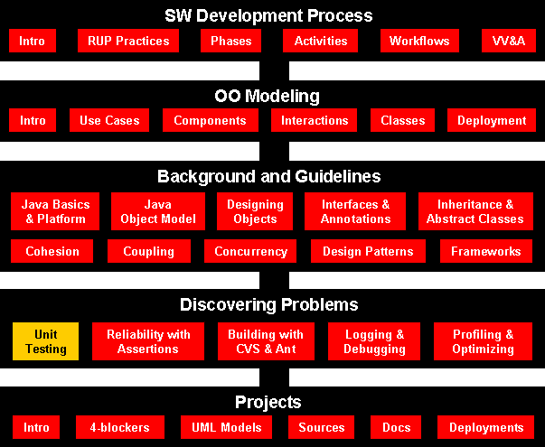
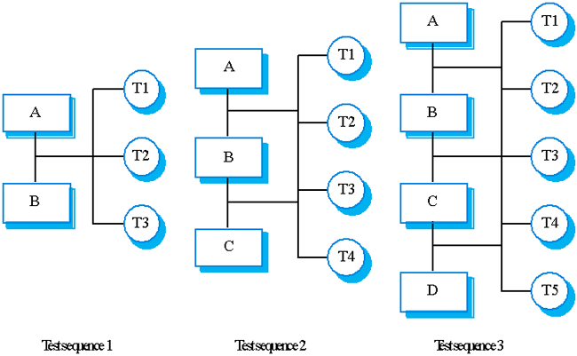
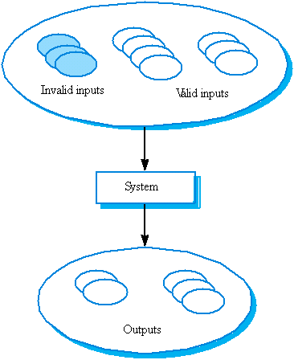
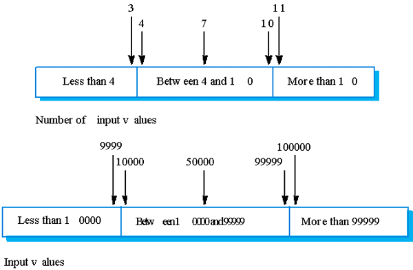

Software Engineering
Unit Testing and Continuous Integration
Course Map

Agenda
- What is black box/white box testing?
- Why Junit?
- Using Junit
- Install Junit
-
Example
-
Exercise
-
Packaging tips
-
Continuous Integration
-
Reference
What is black box/white box testing?
- Black-box and white-box are test design methods. Black-box test design
treats the system as a "black-box", so it doesn't explicitly use knowledge
of the internal structure. Black-box test design is usually described as
focusing on testing functional requirements. Synonyms for black-box include:
behavioral, functional, opaque-box, and closed-box.
White-box test design
allows one to peek inside the "box", and it focuses specifically on using
internal knowledge of the software to guide the selection of test data.
Synonyms for white-box include: structural, glass-box and clear-box.
- While black-box and white-box are terms that are still in popular use,
many people prefer the terms "behavioral" and "structural". Behavioral test
design is slightly different from black-box test design because the use of
internal knowledge isn't strictly forbidden, but it's still discouraged. In
practice, it hasn't proven useful to use a single test design method. One
has to use a mixture of different methods so that they aren't hindered by
the limitations of a particular one. Some call this "gray-box" or
"translucent-box" test design, but others wish we'd stop talking about boxes
altogether.
- It is important to understand that these methods are used during the
test design phase, and their influence is hard to see in the tests once
they're implemented. Note that any level of testing (unit testing, system
testing, etc.) can use any test design methods. Unit testing is usually
associated with structural test design, but this is because testers usually
don't have well-defined requirements at the unit level to validate.
The Testing Process
- Component testing
- Testing of individual program components;
- Usually the responsibility of the component developer (except
sometimes for critical systems);
- Tests are derived from the developer’s experience.
- System testing
- Testing of groups of components integrated to create a system or
sub-system;
- The responsibility of an independent testing team;
- Tests are based on a system specification.
Testing Process Goals
- Validation testing
- To demonstrate to the developer and the system customer that the
software meets its requirements;
- A successful test shows that the system operates as intended.
- Defect testing
- To discover faults or defects in the software where its behavior is
incorrect or not in conformance with its specification;
- A successful test is a test that makes the system perform
incorrectly and so exposes a defect in the system.
System Testing
- Involves integrating components to create a system or sub-system.
- May involve testing an increment to be delivered to the customer.
- Two phases:
- Integration testing - the test team have access to the system
source code. The system is tested as components are integrated.
- Release testing - the test team test the complete system to
be delivered as a black-box.
Integration Testing
- Involves building a system from its components and testing it for
problems that arise from component interactions.
- Top-down integration
- Develop the skeleton of the system and populate it with components.
- Bottom-up integration
- Integrate infrastructure components then add functional components.
- To simplify error localization, systems should be incrementally
integrated.

Components: ((A, B) -> C) -> D
Rerun the test for previous increments as well as the new tests - regression
testing.
Component Testing
- Component or unit testing is the process of testing
individual components in isolation.
- It is a defect testing process.
- Components may be:
- Individual functions or methods within an object;
- Object classes with several attributes and methods;
- Composite components with defined interfaces used to access their
functionality.
Object Class Testing
- Complete test coverage of a class involves
- Testing all operations associated with an object;
- Setting and interrogating all object attributes;
- Exercising the object in all possible states.
- Inheritance makes it more difficult to design object class tests as the
information to be tested is not localized.
Testing Approaches
- Architectural validation
- Top-down integration testing is better at discovering errors in the
system architecture.
- System demonstration
- Top-down integration testing allows a limited demonstration at an
early stage in the development.
- Test implementation
- Often easier with bottom-up integration testing.
- Test observation
- Problems with both approaches. Extra code may be required to observe
tests.
Test Case Design
- Involves designing the test cases (inputs and outputs) used to test the
system.
- The goal of test case design is to create a set of tests that are
effective in validation and defect testing.
- Design approaches:
- Requirements-based testing
where test cases are designed to test the system requirement;
- Partition testing
where you identify input and output partitions and design test so the
system executes inputs from all partitions and generates outputs in all
partitions;
- Structural testing
where you use knowledge of program's structure to design tests that
exercise all parts of the program.
- In general you should start with the highest-level tests from the
requirements the progressively add more detailed tests using partition and
structural testing.
Partition Testing
- Input data and output results often fall into different classes where
all members of a class are related.
- Each of these classes is an equivalence partition or domain
where the program behaves in an equivalent way for each class member.
- Test cases should be chosen from each partition.
Equivalence Partitioning

Equivalence Partitions
Example:
A program specification states that the program accepts 4 to 8 inputs that are
five-digit integers grate than 10,000.

Why Junit?
- My code compiles, so it should run! (Ha ha!). The C era joke -
when C was side-effect of building Unix (no safety nets), not as a
general-purpose programming language.
- Java: strong static type checking and in runtime as well -> getting
working programs faster
- Solve problems that complier doesn't -> automated unit testing
- Writing tests and incorporating these tests into a build system that
compiles your code and runs the tests every single time, as if the tests
were part of the compilation process.
- Junit's main purpose is to support developers in doing their unit testing of Java programs.
- In your project, I expect you to use JUnit extensively when testing your programs.
- Recall that one of the required program quality attributes for your project is
reliability.
- Test cases first, code later
Your UML model, generated
classes form the model, test cases/suits, then continuously test the code
under development.
- JUnit can be used to help you achieve that.
Install JUnit
Below are the installation steps for installing JUnit:
- download from JUnit.org
or
directly
- unzip the junit4.0.zip file
- add junit-4.0.jar to the CLASSPATH.
For example: set classpath=%classpath%;INSTALL_DIR\junit-4.0.jar;INSTALL_DIR
- test the installation by running java
org.junit.runner.JUnitCore org.junit.tests.AllTests.
Notice: that the
tests are not contained in the junit-4.0.jar but in the installation directory
directly. Therefore make sure that the installation directory is on the class
path
Important: don't
install the junit-4.0.jar into the extension directory of your JDK installation.
If you do so the test class on the files system will not be found.
JUnit Annotation Types
@Retention(value=RUNTIME)
@Target(value=METHOD)
public @interface Test
- The
Test annotation tells JUnit that the public void
method to which it is attached can be run as a test case.
- To run the method, JUnit first constructs a fresh instance of the class
then invokes the annotated method.
- Any exceptions thrown by the test will be reported by JUnit as a
failure.
- If no exceptions are thrown, the test is assumed to have succeeded.
A simple test looks like this:
public class Example {
@Test public void method() {
System.out.println("Hello");
}
}
- The
Test annotation supports two optional parameters. The
first, expected, declares that a test method should throw an
exception. If it doesn't throw an exception or if it throws a different
exception than the one declared, the test fails. For example, the following
test succeeds:
@Test(expected=IndexOutOfBoundsException.class) public void
outOfBounds() {
new ArrayList<Object>().get(1);
}
- The second optional parameter,
timeout, causes a test to
fail if it takes longer than a specified amount of clock time (measured in
milliseconds). The following test fails:
@Test(timeout=100) public void infinity() {
for(;;);
}
- Other annotations:
@Before, @After, @BeforeClass, @AfterClass
- To run the suite and to display its results invoke:
org.junit.runner.JUnitCore.runClasses(TestClass1.class, ...);
Simple Test Case
How do you write testing code?
The simplest way is as an expression in a debugger. You can change debug
expressions without recompiling, and you can wait to decide what to write until
you have seen the running objects. You can also write test expressions as
statements which print to the standard output stream. Both styles of tests are
limited because they require human judgment to analyze their results. Also, they
don't compose nicely—you can only execute one debug expression at a time and a
program with too many print statements causes the dreaded "Scroll Blindness".
JUnit tests do not require human judgment to interpret, and it is easy to run
many of them at the same time. When you need to test something, here is what you
do:
- Annotate a method with @org.junit.Test
- Methods annotated with
@Test that are also annotated with
@Ignore will not be executed as tests.
- When you want to check a value,
import org.junit.Assert.* statically,
call assertTrue() and pass a boolean that is true if the test
succeeds
For example, to test that the sum of two Moneys with the same currency contains
a value which is the sum of the values of the two Moneys, write:
@Test public void simpleAdd() {
Money m12CHF = new Money(12, "CHF");
Money m14CHF = new Money(14, "CHF");
Money expected = new Money(26, "CHF");
Money result = m12CHF.add(m14CHF);
assertTrue(expected.equals(result));
}
If you want to write a test similar to one you have already written, write a
Fixture instead.
Fixture
What if you have two or more tests that operate on the same or similar sets of
objects?
Tests need to run against the background of a known set of objects. This set
of objects is called a test fixture. When you are writing tests you will often
find that you spend more time writing the code to set up the fixture than you do
in actually testing values.
To some extent, you can make writing the fixture code easier by paying
careful attention to the constructors you write. However, a much bigger savings
comes from sharing fixture code. Often, you will be able to use the same fixture
for several different tests. Each case will send slightly different messages or
parameters to the fixture and will check for different results.
When you have a common fixture, here is what you do:
- Add a field for each part of the fixture
- Annotate a method. eg., setUp with @org.junit.Before and initialize the variables in
that method
- Annotate a method with @org.junit.After to release any permanent
resources you allocated in setUp
For example, to write several test cases that want to work with different
combinations of 12 Swiss Francs, 14 Swiss Francs, and 28 US Dollars, first
create a fixture:
public class MoneyTest {
private Money f12CHF;
private Money f14CHF;
private Money f28USD;
@Before public void setUp() {
f12CHF = new Money(12, "CHF");
f14CHF = new Money(14, "CHF");
f28USD = new Money(28, "USD");
}
}
- Once you have the Fixture in place, you can write as many Test Cases as you'd
like. Add as many test methods (annotated with @Test) as you'd like.
- Sometimes several tests need to share computationally expensive setup
(like logging into a database). While this can compromise the independence
of tests, sometimes it is a necessary optimization. Annotating a
public static void no-arg method with @BeforeClass
causes it to be run once before any of the test methods in the class. The
@BeforeClass methods of superclasses will be run before those
the current class.
- If you allocate expensive external resources in a
@BeforeClass
method you need to release them after all the tests in the class have run.
Annotating a public static void method with @AfterClass
causes that method to be run after all the tests in the class have been run.
All @AfterClass methods are guaranteed to run even if a @BeforeClass
method throws an exception. The @AfterClass methods declared in
superclasses will be run after those of the current class.
TestRunner
How do you run your tests and collect their results?
Once you have tests, you'll want to run them. JUnit provides tools to define
the suite to be run and to display its results. To run tests and see the results
on the console, run:
public static void main(String args[]) {
org.junit.runner.JUnitCore.main("Example");
}
Use this invocation for programmatic testing:
public static boolean wasSuccessful() {
Result result = org.junit.runner.JUnitCore.runClasses(Example.class);
return result.wasSuccessful();
}
You make your JUnit 4 test classes accessible to a TestRunner designed to work
with earlier versions of JUnit, declare a static method suite that
returns a test.
public static junit.framework.Test suite() {
return new JUnit4TestAdapter(Example.class);
}
public static void testIt () {
junit.textui.TestRunner.run (suite());
}
Expected Exceptions
How do you verify that code throws exceptions as expected?
Verifying that code completes normally is only part of programming. Making
sure the code behaves as expected in exceptional situations is part of the craft
of programming too. For example:
new ArrayList<Object>().get(0);
This code should throw an IndexOutOfBoundsException. The @Test annotation has an
optional parameter "expected" that takes as values subclasses of Throwable. If
we wanted to verify that ArrayList throws the correct exception, we would write:
@Test(expected = IndexOutOfBoundsException.class) public void empty() {
new ArrayList<Object>().get(0);
}
Examples
SimpleTest.java
ListTest.java
CollectionAllTest.java
Using JUnit 3.8 - without Annotations
Assuming that you want to test a class called Parser. The following are the general steps to use the JUnit framework to test this class:
- Write a class (let's call it TestParser) to test the Parser
class. This class must extend the class TestCase which is
defined by the JUnit framework.
- Create a constructor for this class, passing a name that is
representative of the set of tests for this class as the parameter.
- Create a fixture. A test fixture is a set of sample
objects that you want to (re)use during testing. For example,
you might create a few sample source files for the Parser to parse.
JUnit provides a setUp and a tearDown method to manage the fixture.
Therefore, you can eg. create file objects in setUp to open the source
files and release these resources in the tearDown method. The
important thing to note is that setUp and tearDown will be called for
every test that you run.
- Each test you perform is represented by the implementation of
a method in the test class. For example, if you want to test whether
the parser extracts the tokens correctly, you can implement a method
called testGetToken. An important point is that each method name
begins with the word test. This is necessary because JUnit uses
reflection to know which tests to run. The collection of test methods
you implement forms a test suite.
- In each test method you create, use the assertion mechanism
provided by JUnit to compare the results of running the tests and the
results you expected. This will enable you to create repeatable
tests as well as saving you lots of time from visually inspecting the
results.
- Finally, run the tests. There are two ways of running the tests.
JUnit provides a TestRunner tool that can be invoked from the command
line to run the tests and display the results. (there are both text
and graphical versions). Alternatively, you can create a main method
which invokes the TestRunner for execution. Internally, JUnit creates
a test suite object that contains all the test methods of the
testing class and execute each method. As each test is run, JUnit
will provide feedback on whether the test run successfully, or the
test failed, or an exception has occurred.
Example - JUnit
In this section, I will describe how you can use JUnit using an
example. Take a few minutes to examine the following two Java files to
see what the two classes are doing:
- Course.java
// this class is used for storing the information of a course
public class Course {
String course_name; // name of the course
int grade; // grade for this course
// Constructor
public Course(String nm, int gr) throws RuntimeException {
// check that the parameters are valid
if (nm == null || nm.equals("") || gr < 0 || gr > 100)
throw new RuntimeException("Illegal inputs for Course");
// store the course name and its grade
course_name = nm;
grade = gr;
}
// method to get the name of the course
public String getCourseName() { return course_name; }
// method to get the grade of the course
public int getCourseGrade() { return grade; }
}
- Student.java
import java.util.*;
// Student is a data manager that keeps a student's record
public class Student {
private String name; // name of the student
private String number; // the student's number
private Vector course_grades; // courses taken by student
// Constructor
public Student(String nm, String no) throws RuntimeException {
// check that the parameters are valid
if (nm == null || no == null)
throw new RuntimeException("Invalid inputs");
// store the student's name and number
name = nm;
number = no;
// initialize the vector that will store the student's grade
course_grades = new Vector();
}
// method to get the student's name
public String getStuName() { return name; }
// method to get the student's number
public String getStuNumber() { return number; }
// method to assign a grade to a course
public void assignGrade(String course, int score)
throws RuntimeException {
Course c = new Course(course, score);
course_grades.addElement(c);
}
// method to return the grade of a course
public int getGrade(String course) throws RuntimeException {
// check the inputs
if (course == null)
throw new RuntimeException("Invalid course name");
// find the course
for (Enumeration e = course_grades.elements();
e.hasMoreElements();) {
Course c = (Course)e.nextElement();
if (course.equals(c.getCourseName()))
return c.getCourseGrade();
} // for
// if course does not exists, throw exception
throw new RuntimeException("Course " + course + " does not exist");
}
}
Basically, there are two files: Course.java contains the class
definition of a course. Each Course object contains a name eg. CS3214s
and an integer grade which ranges from 0 to 100. Student.java contains
the class definition of a Student. Each student has a name, a number as
well as a list of course grades. You can add the grade that a student
scores at a particular course using the assignGrade method and retrieve
the grade of a particular course using the getGrade method. The
following is the test file I wrote for the Student class (called
StudentTest.java):
import junit.framework.*; // Note 1
public class StudentTest extends TestCase { // Note 2
// constructor - Note 3
public StudentTest(String name) {
super(name);
}
// method to test the constructor of the Student class
public void testConstructor() { // Note 4
String student_name = "Jimmy";
String student_no = "946302B";
// create a new student
Student stu = new Student(student_name, student_no);
// verify that the object is constructed properly - Note 5
assertEquals("student name wrong", student_name, stu.getStuName());
assertTrue("student no. wrong", stu.getStuNumber().equals(student_no));
// create some illegal inputs - Note 6
try {
Student s = new Student("Jimmy", null);
fail("Constructor allows null student number");
} catch (RuntimeException e) {}
try {
Student s = new Student(null, "980921C");
fail("Constructor allows null student name");
} catch (RuntimeException e) {}
}
// method to test the assigning and retrieval of grades
public void testAssignAndRetrieveGrades() {
// create a student
Student stu = new Student("Jimmy", "946302B");
// assign a few grades to this student
stu.assignGrade("cs2102", 60);
stu.assignGrade("cs2103", 70);
stu.assignGrade("cs3214s", 80);
// verify that the assignment is correct
assertTrue("fail to assign cs2102 grade", stu.getGrade("cs2102") == 60);
assertTrue("fail to assign cs2103 grade", stu.getGrade("cs2103") == 70);
// attempt to retrieve a course that does not exist
try {
stu.getGrade("cs21002");
fail("fail to catch non-existent course name");
} catch (RuntimeException e) { }
}
// method create a test suite - Note 7
public static Test suite() {
return new TestSuite(StudentTest.class);
}
// the main method - Note 8
public static void main(String args[]) {
junit.textui.TestRunner.run(suite());
}
}
Notes for the preceding code:
- Note 1
To use the JUnit's classes, you must have this import statement.
- Note 2
Every test class that you wrote must extend the class TestCase.
- Note 3
This constructor is quite standard, you can just cut and paste for
every test class you create.
- Note 4
This is an example of a method written to test one of the methods of
the Student class. In this case, it's the constructor. Notice that all
the method names start with "test" (in lowercase). This is required
for JUnit to find the methods to test at runtime. Hence, don't forget
to begin all methods with the word "test".
- Note 5
There are several ways to test whether the results from the test is
what you expected. The assertEquals method takes three arguments. The
first argument is a message that gets printed if the assertion fails
while the remaining two arguments are compared to see if they are
equal. The assertion fails if they are not equal. On the other hand,
the assertTrue method takes only two arguments. Its only difference
from the assertEquals method is that the second argument is a boolean
expression which results in either a true or false value.
- Note 6
You can use the following code to test for cases where an exception is
expected. Notice that if the exception is not thrown, the fail method
will be invoked causing the test to fail and printing the message
passed as an argument to the fail method.
- Note 7
The class method suite is used for assembling all the tests into a
test suite. You will need to include this method for each class that
uses the JUnit framework. Just modify accordingly.
- Note 8
The main method used here invokes the text-based version of the TestRunner. Fairly standard - just cut and paste to your test
classes.
To run the test suite, simply type:
java StudentTest
and you're off doing your unit testing :-)
Exercise
The best way to learn JUnit is to use it. So, here's a small exercise
you can do to get some hands-on practice. Let's say we now extend the
Student class by adding a method to find the average grade of all the
courses taken by the student. You can add the following piece of code
to Student.java:
// method to find the average grade of all the courses taken by the student
public float findAveGrade() {
// if the student has not taken any courses, return 0 marks
if (course_grades.isEmpty()) return 0.0f;
// otherwise, find the average grade
int total = 0;
for (Enumeration e = course_grades.elements(); e.hasMoreElements();) {
Course c = (Course)e.nextElement();
total += c.getCourseGrade();
}
return (float)total / course_grades.size();
}
Your job is to write a method in StudentTest.java to test this newly
created method. Give it a try and see whether you really know how to
use JUnit ;-)
Packaging your source code
Organizing the project code into packages
All your sources go under src.
Create meaningful package structure under the src directory. All your
class files go under classes directory.
To compile, just do the following.
java -classpath c:\classes -d c:\classes c:\src\........
Organizing the test code
Following the guideline of "Code a little, test a little, code a
little, test a little,...", you'll soon find the amount of test code
increasing rapidly as the project progresses. A recommended way to
organize your test code is to put all the test code for classes of a
particular package as a sub-package. Let's say I now want to organize
the tests for my tutorial package:
- Create a subdirectory call test as follows:
mkdir C:\src\junit\tutorial\test
- Place the StudentTest.java file in the subdirectory just created
- Ensure that StudentTest.java has the following (you will need
to recompile after editing the file):
package junit.tutorial.test;
import junit.tutorial.*;
- To run the test, type the following:
java junit.tutorial.test.StudentTest
In this way, you will find it easier to locate your test code and do
regression testing.
References
- I need to remind you that what I have just covered is the minimum that
you need to know to get started using JUnit.
JUnit
Cookbook
A cookbook for implementing tests with JUnit.
Javadoc
API documentation generated with javadoc.
Frequently
asked questions
Some frequently asked questions about using JUnit.
- The following documents still describe JUnit 3.8.
Test Infected - Programmers Love Writing Tests
An article demonstrating the development process with JUnit.
JUnit - A cooks tour